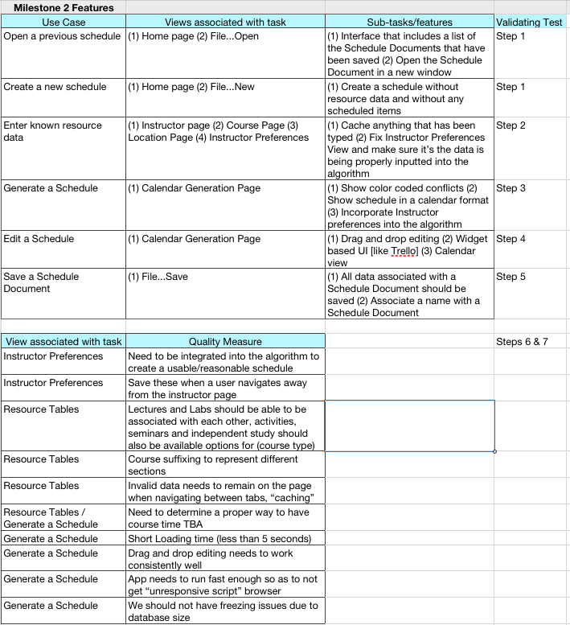

For the Week 5, Winter 2012, release, we will incorporate the following features:

Below is a list of the more general features that were established at the start of the project:During initial phase one interviews, each department was asked to explain their scheduling procedure and suggest features and tools that would be useful to them. After interviewing all departments participating in the project, the following feature matrix was designed to reflect the overall importance of the program's features.
Each feature is ranked on a scale of -2 to 2, representing the following:
| Feature | Desirability |
| Must avoid time conflicts | 2 |
| Must avoid instructor conflicts | 2 |
| Must follow course preferences | 2 |
| Handle course constraints specified by the department and university | 2 |
| Persist schedules from term to term and year to year | 2 |
| Quick and intuitive Drag N Drop interface for editing a schedule | 2 |
| Changes to schedule are reflected immediately throughout the program | 2 |
| Immediately notify user of scheduling conflict with a descriptive error | 2 |
| View schedule in week view, similar to "Weekly View" in CPReg / PASS | 2 |
| View schedule in basic list view | 2 |
| Export data to Peoplesoft automatically with minimal user input | 2 |
| Export any view to printer or .CSV Excel file | 2 |
| Display enrollment information for courses | 2 |
| Individual instructors may specify their course and time preferences | 2 |
| Individual instructors may view complete schedules in a read-only mode | 2 |
| Must avoid location conflicts | 1 |
| Courses, instructors, and locations may be manually specified by the administrator | 1 |
| Specify special equipment available at each location and necessary for each course | 1 |
| Reflect changes made in Peoplesoft in the program | 1 |
| Take multiple schedules and merge them together | 1 |
| Filter schedule by courses, instructors, and locations | 1 |
| Filter schedule by days and times | 1 |
| Limit instructor preferences to binary (only can / cannot) | 1 |
| Allow instructors to provide feedback on the proposed schedules | 1 |
| Take finals day and time into account while generating a schedule | 0 |
| View another department's schedule | 0 |
| Import data from a properly formatted .CSV document | 0 |
| View instructor course load as a yearly snapshot | 0 |
| One-time scheduling for single events that require a classroom | -1 |
| Output to tab-delimited format | -1 |
| Instructors have more priority based on years worked and contract | -1 |
| Output to tab delimited format | -1 |
| Display current enrollment information for courses | -1 |
| Customize color coding of courses based on course level, enrollment, importance, etc | -1 |